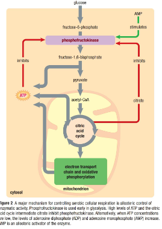
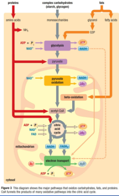

Callout
NADH is produced in Cytosol during Glycolysis >>>> so no immediate access to Electron Transport Chain within Mitochondria
Malate – aspartate shuttle: Transfer is very energy efficient >>>> NADH in cytosol oxidized to NAD+ >>>> electrons transferred across the membrane >>>> used to reduce NAD+ to NADH within the matrix.
Glycerol – phosphate shuttle: Transfer electrons across membrane from NADH to FAD in the matrix >>>> formation of FADH2 >>>> which has less free energy
Malate – aspartate shuttle >>>> electron transport and oxidative phosphorylation produce 34 ATP from NADH and FADH2
Total maximum ATP produced per glucose molecule oxidized in cellular respiration can be added as follows:
Can you calculate the efficiency of Aerobic Respiration at extracting energy from Glucose and converting it into ATP?
Hydrolysis of ATP to ADP and Pi yields 31 kJ/mol >>>> if complete glucose oxidation produces 38 ATP, then.
Glucose contains exactly 2870 kJ/mol of energy >>>> efficiency of aerobic respiration =
Did you know that LED (light – emitting diode) bulbs produce light using one third to one thirtieth of the amount of electricity that incandescent bulbs use!!!
Callout
CREATINE PHOSPHATE
Muscle and brain cells >>>> difficult to maintain constant supply of energy >>>> as energy demands fluctuate dramatically.
Some organisms use Creatine phosphate >>>> in presence of excess ATP >>>> organisms use extra ATP to phosphorylate creatine >>>> creatine become creatine phosphate (high energy molecule)
Creatine phosphate stored within cells >>>> cells reverse the reaction to generate additional ATP rapidly.
Amount of ATP produced by aerobic cellular respiration supplemented >>>> enables cell to obtain more ATP.
Creatine phosphate reserves depleted >>>> cells regenerate Creatine phosphate by ATP.
Metabolic Rates – The amount of energy that is expended per unit time in an organism.
Basal Metabolic Rate (BMR) – The metabolic rate of an organism at rest
Did you know that BMR is greatly reduced with an increased percentage of Body Fat!!!
The resting metabolic rate of skeletal muscle is at least three times that of adipose (fat) tissue!!!


Beta Oxidation – Process in which fatty acids are broken down into acetyl-CoA through catabolism
Can you think of the reason why Carbohydrates are considered heavier than lipids to carry around as a fuel??
Carbohydrates >>>> extremely hydrophilic >>>> if we consume a gram of dry sugar >>>> must consume a gram of water to make up for water that binds to sugar
Fats >>>> hydrophobic
Animals >>>> large quantities of carbohydrates >>>> converted into fats for storage
Fatty acids can be used as a source of energy by being oxidized to acetyl-CoA
Excess acetyl-CoA >>>> removed from respiration pathway >>>> used to synthesize fatty acids needed for cellular processes